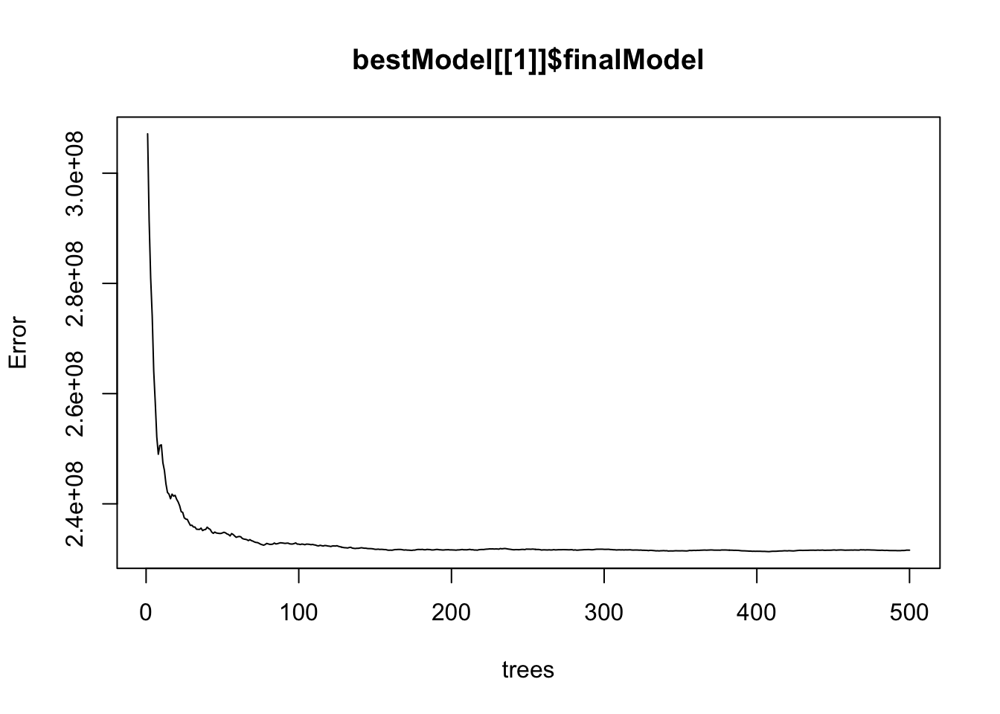

Predicting Salary
Sam Hopkins
Introduction
This model uses regression to predict salaries. Some of the questions that will be asked:
- How do gender, education level, time in the workforce, and age affect salary?
- Which groups tend to make more?
- To what extent can these things be used to predict salary? Is any one predictor more significant than the others?
This kind of project can help to inform how various factors may aid or inhibit one's ability to earn a certain salary, revealing pay gaps between different groups. However, the aim of this particular project is more to find the best approach to predict someone's salary given these factors than to reveal discrepancies between groups. It seems fair that level of education, years of experience, and age should contribute to earning potential, but why gender? Gender is the only unfair determinant of an individuals salary within the scope of this project. Many studies have been conducted attempting to reveal gender pay gaps across many industries for this reason. Pay gaps based on the other factors have been studied, but are not nearly as interesting or relevant to informing our decisions because they do not have to do with societal equity in the same way.
State of the Art
- Gender Pay Gap in Medicine 1
This study examined 46 articles containing information pertaining to physician pay and gender, published between 2000 and 2022. It found that "across almost all studies, female doctors earn significantly less than men ... despite similar demographic and work-related profiles" 1.
- Gender Pay Gap in Auditing 2
This study examines the gender pay gap in the auditing profession in Sweden, using Swedish administrative data from 2007 to 2015. "The auditing profession's overall gender salary gap has substantially narrowed during this period", it states, but "gender inequality has existed for a long time in the auditing profession and remains a serious concern" 2. It seems that the pay gap is narrowing in some professions and parts of the world, but it is still a very real and pervasive problem.
Studies
- Example 1
This notebook uses linear regression, decision trees, and random forests to predict salary. Uses same dataset.
- Example 2
This notebook uses linear regression to predict salary, introducing ridge regression at the end. Uses different dataset.
Similar Projects
Many attempts have already been made to predict salary using regression. R2 values above 0.90 are typical for well-thought-out models.
Materials and Methods
Dataset
The dataset for this project is from Kaggle. It was compiled from a collection of publicly available sources, including surveys and job posting sites. It contains the salary, education level, age, number of years of experience, gender, and job title of 6704 individuals, and was last updated 1 year ago.

The dataset contains eight values for education level: phD, PhD, Bachelor's, Bachelor's Degree, Master's, Master's Degree, High school, and blank/none. 10 na values were removed using na.omit(). A value 1-4 was assigned to the education level of each individual in the dataset, using the same number for redundant values of Bachelors, PhD and Masters. Since there was only one value below high school for education level (empty string, not NA), it was put in the same category as high school (high school/none). A value 0 or 1 was assigned to gender, and as.factor() was used on these new numerical columns to ensure they functioned properly within the context of regression.
A few interaction terms were tested, but none of them seemed to have much of an effect on the results. Education level (1-4) was multiplied by half the mean of years of experience (mean 8.095 / half 4.0475) and added it to years of experience. This term seemed to have a positive effect on the outcome at first, bringing the R2 of a non cross-validated random forest up by around four percentage points. This effect was erased, however, after cross-validating the models.
Other terms that were tried include log(age) and (years of experience)^1/4, since the relationship with salary for both of these seems to flatten out the higher the x gets. These terms effectively did not change the results in any case, so they were not selected for the final model.
Methods
Random forest definitely seems to be the best model. General linear models, decision trees, and ridge regression were also tested.
Evaluation
R^2 and RSE are being used as metrics; R2 for the percentage of variance that can be explained by the model, and RSE for the error of the regression model. The goal is to find the model with the highest R^2 and lowest RSE; ideally both, favoring R2 if no model results in a minimum for both. The dataset was split into training/testing 80/20 using randomly selected indices. Models were cross-validated using 5-fold CV, again with each fold being split into randomly selected indices.
Results
The best model shows an R2 of 0.91, which is very good. The RSE is around 15000, which is very good for a dataset in which the IQR is around 45000, three times that.
Comparison Table
Predicted vs Observed: Cross-Validated Random Forest Model
Random Forest (best)
The error is lower with more randomly selected predictors. Even though there are only four predictors in the formula, this chart goes up to six, likely because the RF algorithm is using an auto-generated interaction term or something else from the dataset that was not specified.
Cross-Validated
Original
The error decreases as the number of trees increases in both cases; the decrease is slightly shaper in the cross-validated model.
General Linear Model
Cross-validated
One trial
All predictors are significant.
The cross-validated model is the same as the one found on one trial; cross-validation does not seem to help the general linear model in this case.
Ridge Regression
The error increases as lambda increases.
Decision Tree
The error increases as the complexity increases.
Observations about Models
- Error decreases with more trees, with more predictors in RF (to a point).
- Error increases with complexity the decision tree and penalty in ridge regression. This dataset and/or problem seem prone to overfitting; the random forest model is working well because it reduces overfitting by generalizing.
- Linear model shows all predictors are equally significant. It does not improve with cross validation; it is already optimal with one fit, likely due to the size of the dataset or stability of the model.
Conclusions
Given an R2 value of 0.91, the model is very good at predicting someones salary based on their age, years of experience, education level, and gender.
It seems that age, years of experience, education level, and gender do affect the likelihood of earning a salary above a certain threshold. Additionally, they all seem to be significant predictors.
Future Work
This dataset only contains salaries up to $250K. While that is high, the size of the dataset is 6704, and I would assume there would be a handful people with higher salaries than that in a randomly selected sample of American citizens. It would be interesting to try to create a similar kind of model using a dataset containing a wider range of salaries.
It would also be interesting to look at a dataset including the sector in which someone works and the level of their position. This dataset included a job title column, but it was too varied and too vague in its specifications for me to fit it into this problem. I definitely think that the results could be improved with a larger dataset containing more variables.
Bibliography
- Dong, T. "Gender Salary Gap in the Auditing Profession: Trend and Explanations." European Accounting Review, vol. 33, no. 2, September 2022, pp. 617 to 645. doi:10.1080/09638180.2022.2113550.
- Hoff, Timothy, and Do Rim Lee. "The Gender Pay Gap in Medicine: A Systematic Review." Health Care Management Review, vol. 46, no. 3, July 2021, pp. E37 to E49. doi:10.1097/HMR.0000000000000290.